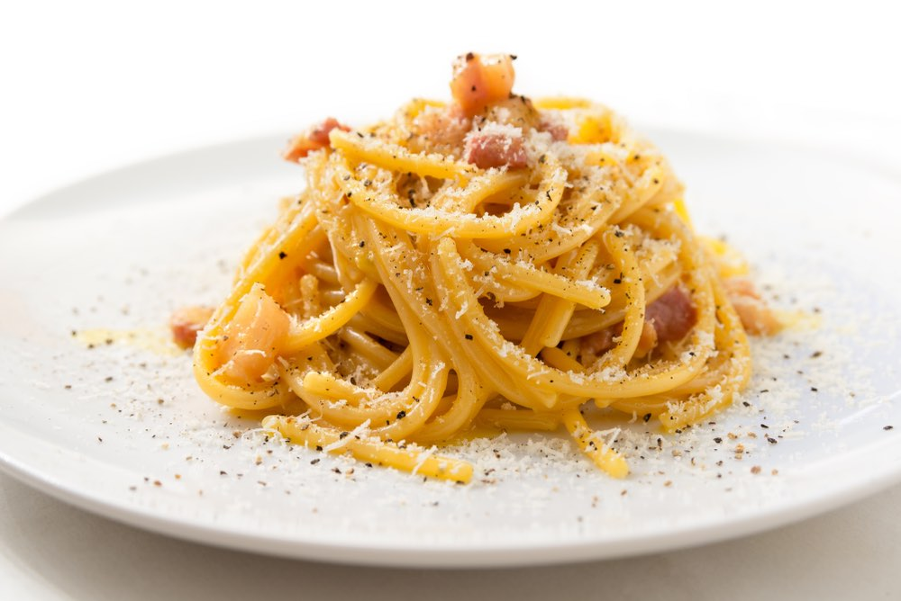

Odin Recipes
Pasta Caronara

Description:
Pasta Carbonara is a classic Roman dish known for its creamy texture achieved without using any actual cream. The magic happens when hot pasta is tossed with eggs and cheese, creating a silky sauce that clings to each strand of pasta. With just a handful of high-quality ingredients, this elegant yet rustic dish delivers incredible flavor in less than 30 minutes.
Ingredients:
For the pasta
- 1 pound (450g) spaghetti or bucatini
- 2 tablespoons kosher salt (for pasta water)
For the sauce
- 8 ounces (225g) guanciale or pancetta, cut into ¼-inch cubes
- 4 large egg yolks
- 2 large whole eggs
- 1 cup (100g) Pecorino Romano cheese, freshly grated (plus more for serving)
- 1 teaspoon freshly ground black pepper (plus more for serving)
- ½ teaspoon salt (optional, depending on saltiness of pork and cheese)
Steps:
- Prepare the ingredients: Bring a large pot of water to a boil. Meanwhile, in a medium bowl, whisk together the egg yolks, whole eggs, grated Pecorino Romano, black pepper, and salt (if using). Set aside.
- Cook the pork: In a large skillet over medium heat, cook the guanciale or pancetta until the fat has rendered and the meat is crispy but not burnt, about this is about 8-10 minutes. Turn off the heat but keep the rendered fat and meat in the pan.
- Cook the pasta: Once the water is boiling, add salt and pasta. Cook until al dente according to package instructions, usually 9-11 minutes. Reserve 1 cup of the starchy pasta water before draining.
- Create the sauce: While the pasta is still very hot, add it to the skillet with the guanciale over low heat. Toss to coat the pasta with the rendered fat. Add ¼ cup of the reserved pasta water to the egg mixture and whisk quickly to temper.
- Combine carefully: Remove the skillet from the heat. Quickly pour the egg mixture over the hot pasta and toss vigorously to coat all the pasta. The residual heat will cook the eggs into a creamy sauce without scrambling them. If the sauce is too thick, add additional reserved pasta water, a tablespoon at a time, until you reach the desired consistency.
- Serve immediately: Divide the pasta among warmed plates and top with additional freshly grated Pecorino Romano and black pepper. Serve right away while the pasta is still hot and the sauce is creamy.